The Collaborators
同行者：智慧与热忱的交织
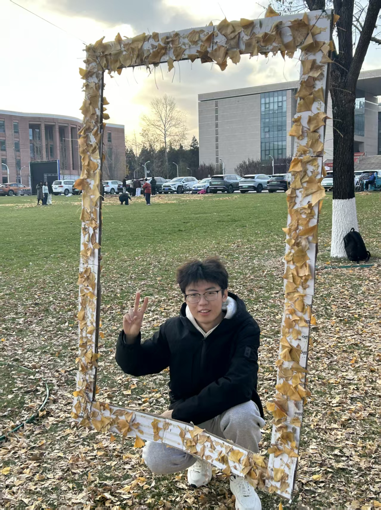
王德正
「饭醉老大」
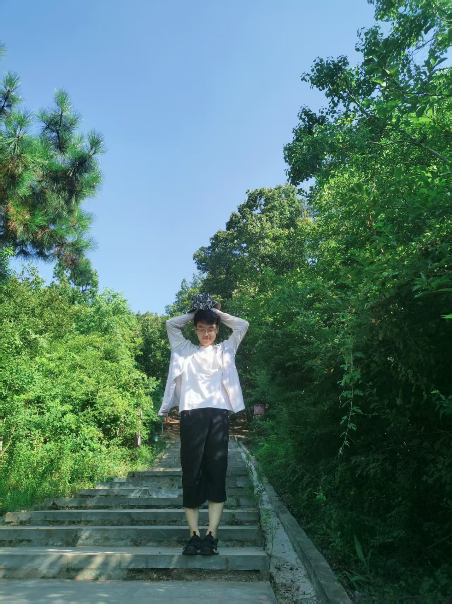
黄宇翔
「周口店爱猫冷少」
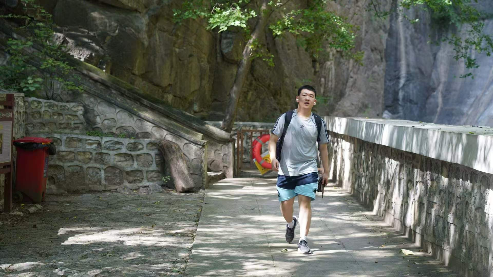
李炘昊
「老绷带」
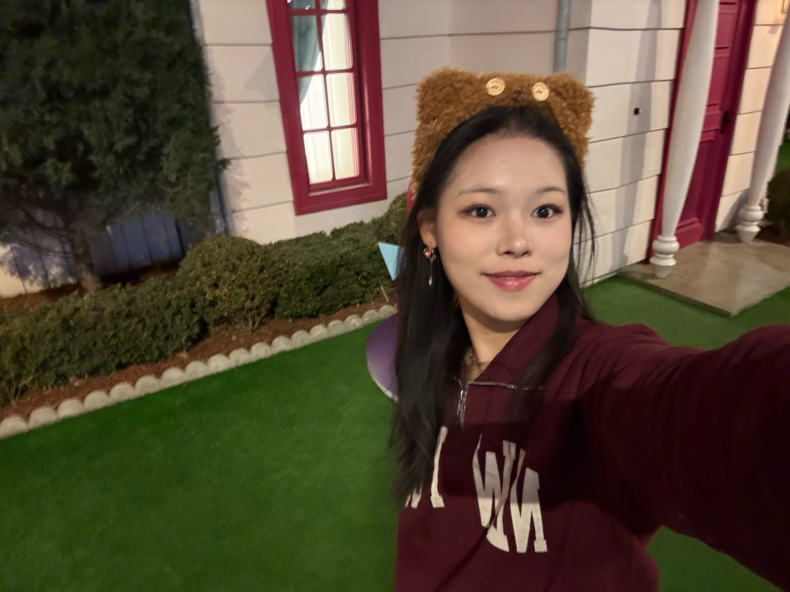
许雨蒙
「小美人鱼」
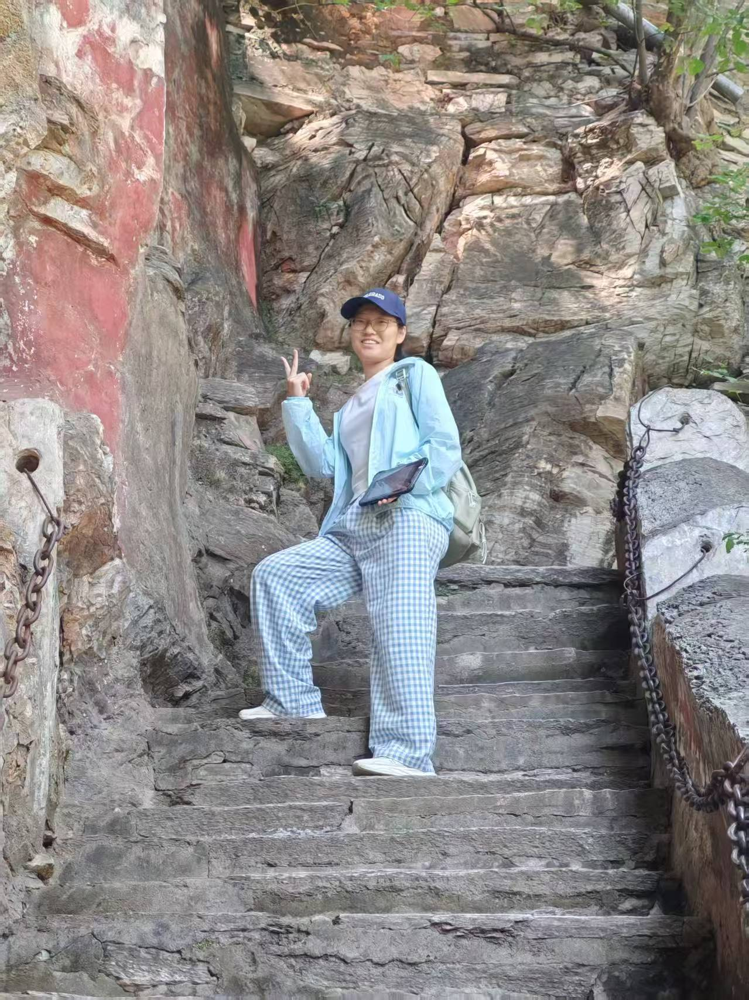
韩宏杰
「爆笑虫子」
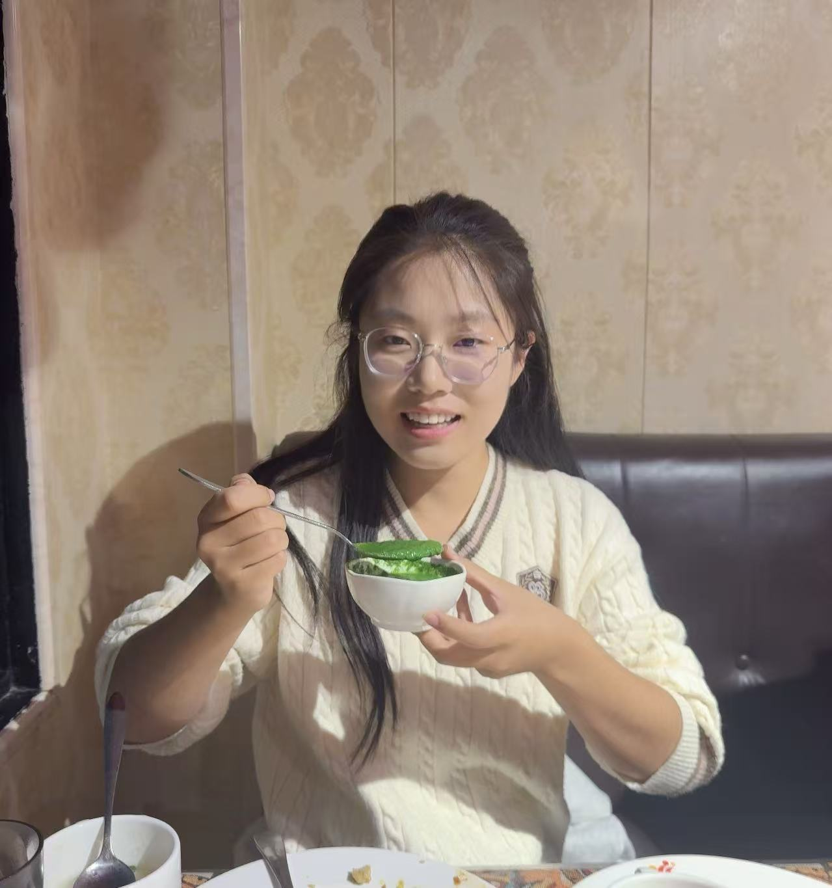
李成林
「女皇陛下」

王德正
「饭醉老大」核心分工与职责
统领项目全局，负责上方山现场多源空间数据的敏捷采集、基线解算与外业踏勘路线规划，统筹各阶段野外调查任务落地，并全程保障团队安全与各项需求。
专业技能与技术标签
综合统筹
基线解算
外业勘测
数据采集
安全应急
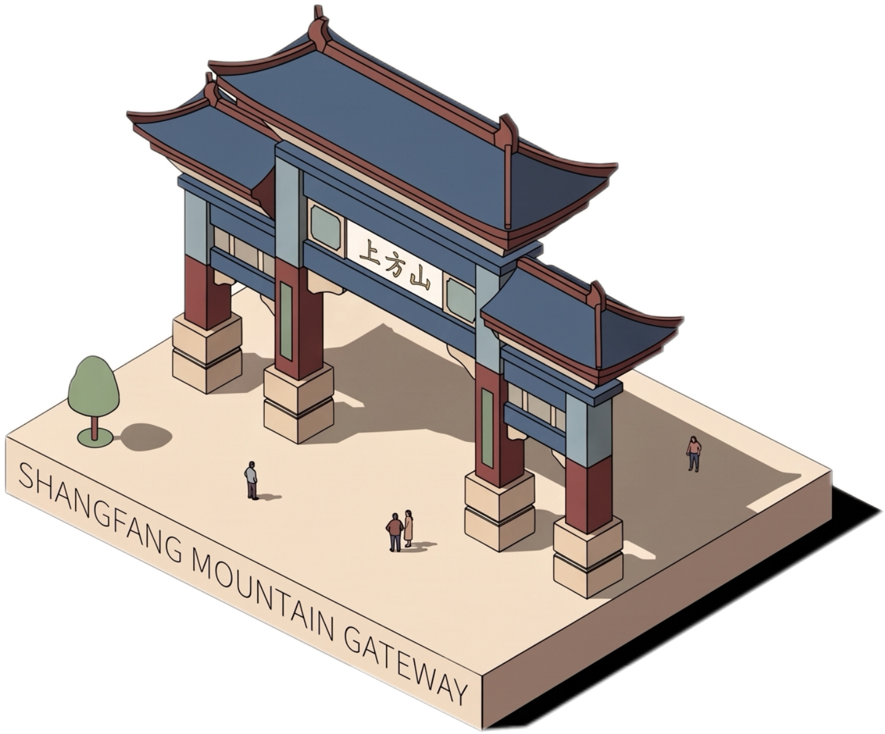
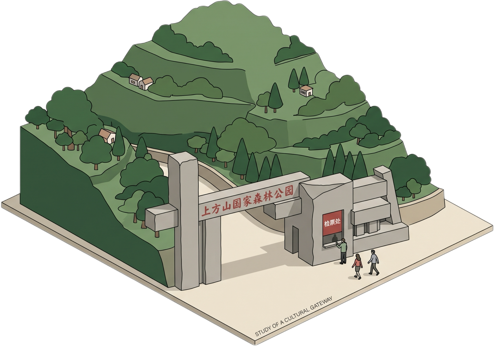
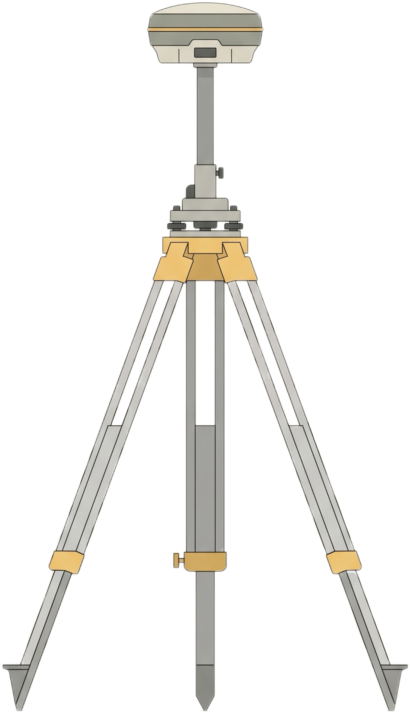
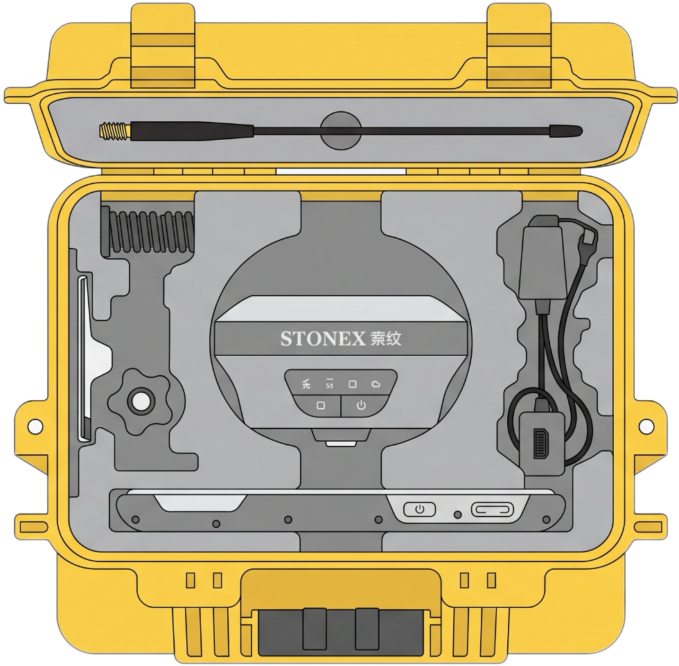
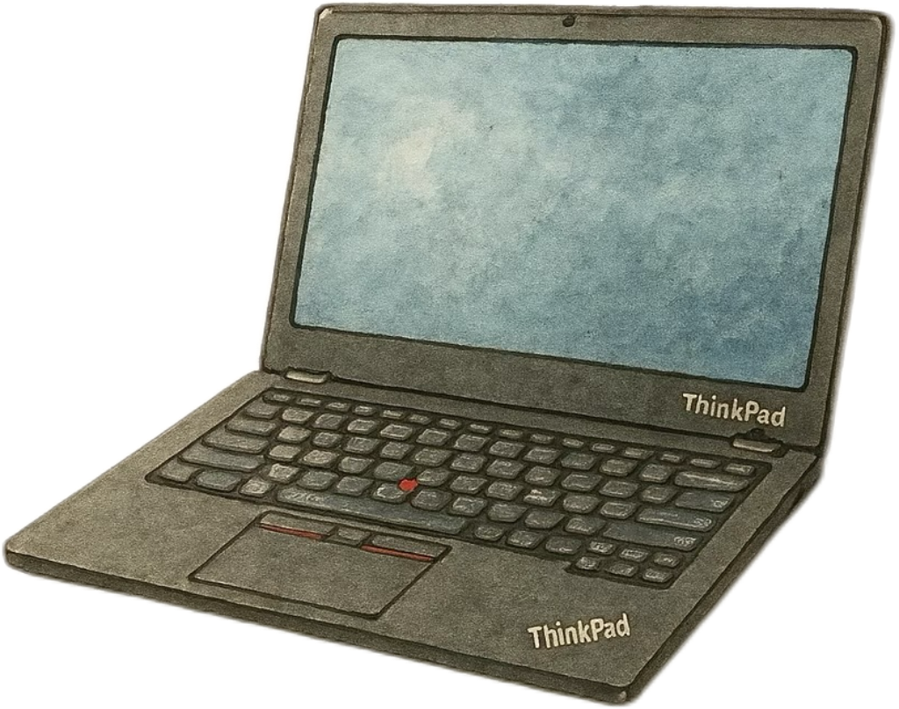
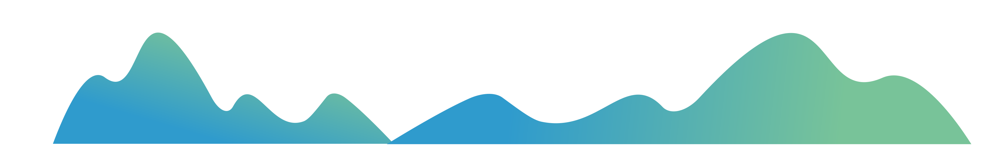
Chronicle of Practice
九日寻径：上方山探索足迹与心路

奔赴上方山开展综合考察与数据采集
清晨集合出发。抵达上方山开展地质环境综合考察、踏勘与测量，野外午餐自带干粮。下午下山前往周口店基地晚餐并入住。

GNSS 控制网布设设计与阶段汇报
上午布置控制网布设设计任务；下午开展设计计划汇报及专题进展汇报，理清空间定位与网形优化方案。

开展 GNSS 控制测量
全天深入野外开展 GNSS 控制测量作业，严格落实各项观测规范，总结经验。

GIS 专题设计与数据处理
双线并进：一方面开展 GIS 专题项目的设计与制作，另一方面及时处理采集的数据。

赴上方山周边调研与数据补充采集
根据小组进度乘车再次前往上方山，针对前期盲区与不足开展实地调研与数据补充采集。

专题进展研讨
召开专题项目进展汇报研讨会，汇总阶段成果并查漏补缺。

深化专题项目制作
全天集中进行专题项目成果的深度制作、空间分析及图件编绘，加速各项核心模块落地。

专题成果初步汇报研讨
组织调研成果的初步汇报与集中研讨，对整体成果查漏补缺，为最终答辩和总结做冲刺准备。

圆满结束返程
收拾行囊与实习设备，全员集合整理，前往中国房山世界地质公园博物馆参观学习。全体同学圆满完成上方山 3S 综合实习任务，顺利返程！